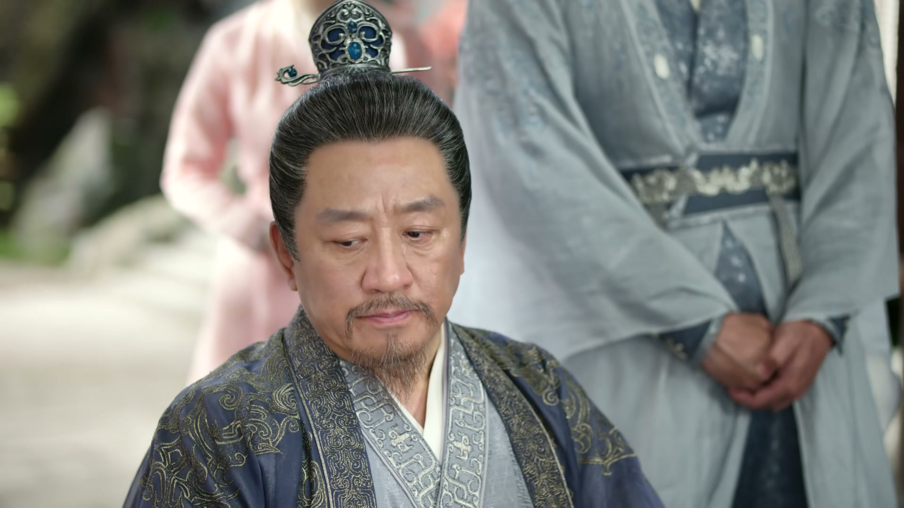
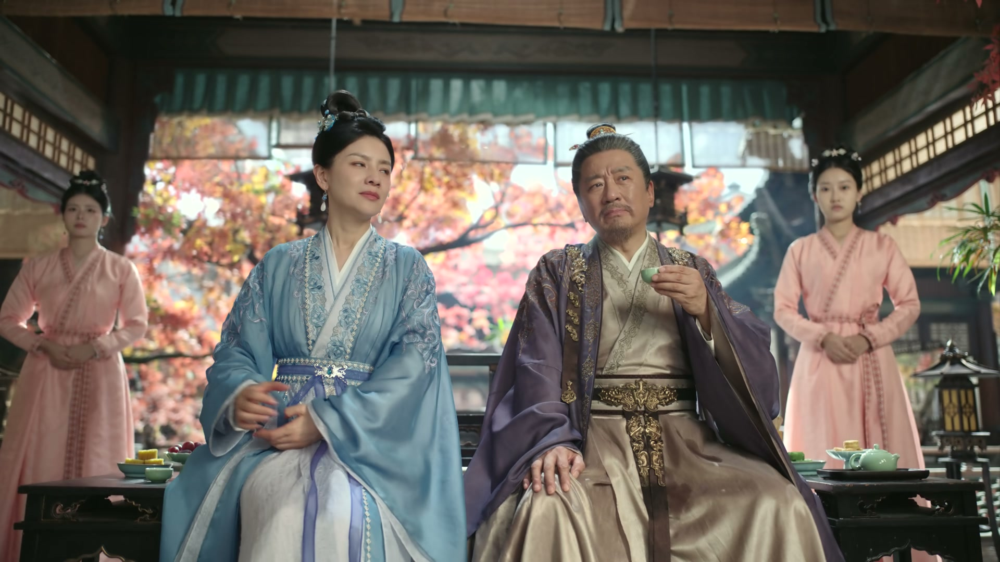
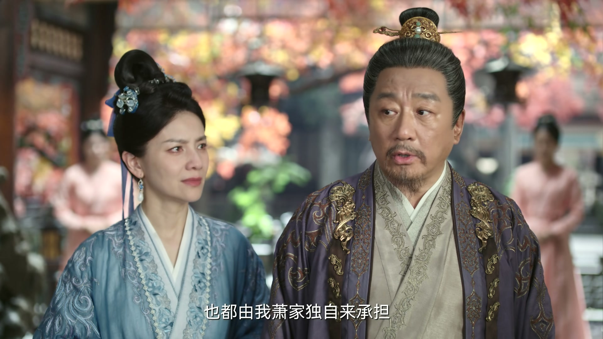
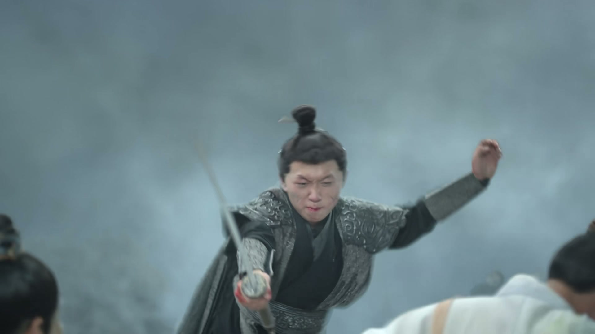
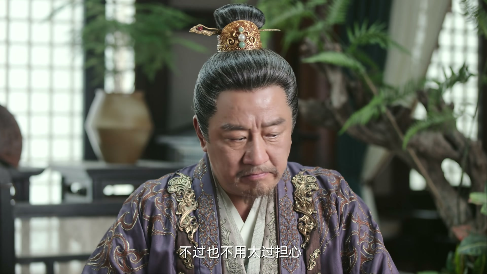
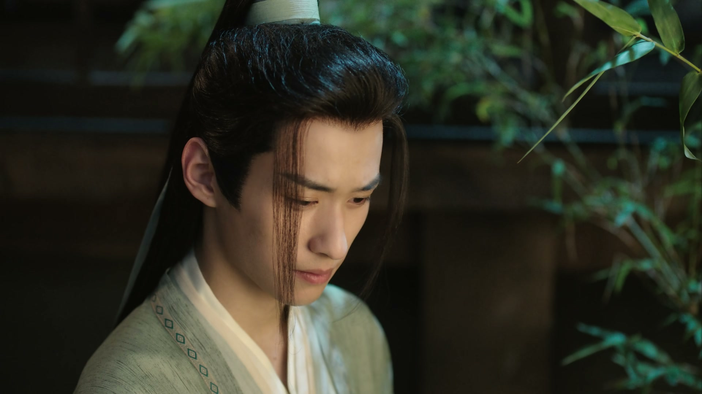

巧胜一时，不如真功一世
情境：萧秋水用旁门左道赢了第一场比武，父亲怒斥「诡辩岂是正道」，大哥也气得险些失控。
遇到这种情况，可以这样做
- 靠花招赢一时可以，赢一世还得靠真本事。
- 旁门左道短视，苦练基本功才是最长远的投资。
- 赢得让人心服口服，才算真正赢了。

Drama Recap · 剧情图文总结
第 6 集 · 灭门危局
萧秋水在比武中以巧取胜，惹得父亲斥责「诡辩岂是正道」；他舍身护人换来一线机会，兄长暂掌掌门，立下半年后再比之约。可权力帮不给萧家这个时间——佩剑悬于锦都，灭门血书临门，十九人魔上门索要英雄令。萧家退守剑庐，武老夫人的秘密与内应的暗影，同时浮出水面。
比武巧胜引来灭门血书，萧家退守剑庐，一场为英雄令而起的浩劫正席卷浣花。
第6集，从一场「巧胜」说起。 延续上集与大哥的比武，萧秋水用旁门左道赢了第一场比试，父亲萧西楼怒斥「诡辩岂是正道」。第二场比轻功抢花，大哥情急之下使出母亲传授的绝招「后燕三式」，秋水为护身后之人硬生生接下这一剑、摔倒在地。萧西楼看在眼里，宣布掌门令牌暂由萧易人代为掌管，兄弟俩半年后堂堂正正再比一场——这段日子，成了萧家最后的平静。
剧里的鸡毛蒜皮，往往是人生的缩影。这些情节不只是故事——当你在现实中遇到同样的处境时，它们能提醒你：先做什么、别做什么、怎么说才有效。
情境：萧秋水用旁门左道赢了第一场比武，父亲怒斥「诡辩岂是正道」，大哥也气得险些失控。
情境：萧秋水嫌半年之约太久，萧西楼一句「若连等半年的心性都没有，那就不必想了」，点醒了他。
情境：比试中大哥一剑袭来，萧秋水为护住身后的人没有躲开。父亲虽判他「本该算输」，却赞他舍身护人，给他赢来「一线机会」。
情境：萧秋水杀了傅天义引来权力帮血书灭门，他没有逃避，反而劝众人离开、一力扛下责任；父亲也宣布「仇怨由我肖家独自承担」。
情境：萧西楼请诸位离开避祸，结义兄弟、多年老友、唐门诸人却无一肯走，纷纷要「共进退」。
情境：萧秋水担心剑庐中若有内应便不再安全，父亲承诺会逐一排查；深夜，内应果然现身，一声「前方告急」搅乱军心。
萧秋水与大哥萧易人的比武，从上集延续到这一集。萧秋水一上来就亮出底牌——第一场比试，他以「以智取胜」赢了大哥。萧易人又惊又怒：他本是以为三弟有点真本事才答应比试，没想到他不苦练武功，尽耍这些旁门左道。
萧秋水不慌不忙地辩解：江湖多事之秋，论武功也是山外有山、天外有天，肖家少掌门脑子聪明一些也是一件好事，「我这是以智取胜，也在规则之内嘛」。他还拉上爹娘评理：大哥输了不能不认。孙慧珊和稀泥道「对，输了就得认」，萧西楼却勃然大怒：「诡辩岂是正道！」当即定下第二场比轻功抢花。
关键台词 · KEY QUOTES

第二场比试，萧秋水又要「谁先抢到花谁赢」的新花招。萧易人再也按捺不住：「你安排的这几场比试，不会都要用这些旁门左道吧？我肖家威震武林，凭的都是真才实学！」萧西楼也放话：「比试就是比试，凭真本事论输赢，休想再耍花样。」
比试中，孙慧珊的绝招「后燕三式」被大哥使了出来——原来娘早已把这一手传给了三弟，连萧雪鱼都看出了门道。眼看杀招逼近，萧秋水却为了护住身后的人，硬生生没有躲开，被击倒在地、磕到了头。事后萧西楼质问：「你本可以躲过，为何不躲？」秋水答：「她现在都在后面，我怎么能躲呀！」
关键台词 · KEY QUOTES
萧西楼当场宣布：「浣花剑派掌门之令牌，即日起就由萧易人代为掌管，但少掌门之位，姑且暂缓决定。」他看穿秋水本可躲过致命一剑，却也赞他舍身护住身后之人，「确实为你赢得了一线机会」。他命萧易人代为掌门，半年后兄弟二人再堂堂正正比试一次。
萧秋水嫌「半年实在是太久了」，萧西楼冷冷反问：「要想当一派掌门，若连等半年的心性都没有，那就不必想了。」大哥劝他别记恨，半年后堂堂正正再比；父亲则命两兄弟即刻动身去广陵别院。秋水佩剑丢了、剑鞘碎了，想借家传的「承影剑」，被父亲斥「还想顺杆爬，你是想直接当掌门了」。
入夜，萧秋水独自在屋里念叨「那也没办法了，只能等了」。就在此时，一道阴冷的声音不知从何处响起：「萧秋水，你屡屡让人意外，假以时日定能超过你父亲和大哥。只可惜，我不会给萧家这个时间。」——权力帮的刀，已经举了起来。
关键台词 · KEY QUOTES
萧雪鱼带着伤药来看秋水，转述大哥的心意：「大哥表面不在意，却特意提起好些药材，暗示我带给你。」秋水笑着说知道大哥也是为他好。雪鱼要随大哥二哥去广陵别院，临行前叮嘱他好好练功：「半年过后，我还等着跟秋水大侠一同闯荡江湖呢。」
姐弟俩还聊起终身大事。秋水问起雪鱼姐对未来另一半的期待，雪鱼答：顶天立地的侠士，武功要好、做事要有主见，正气更重要，还要胸怀磊落、侠肝义胆。秋水认真地说：「姐，你自己的幸福应该握在自己手中，谁都不可以勉强你。」
雪鱼前脚刚走，萧秋水正要回屋，却被门口的大哥二哥逮个正着：「姐姐不是说你们已经走了吗？」大哥故作不满：「我兄弟要去广陵，你送也不送，就这么急着让我们走？」闹够了，大哥正色叮嘱秋水照顾好爹娘、别惹他们生气，二哥嘱咐他好好练功，「等半年以后我们回来，我们再好好比一场」。秋水郑重答应，目送两位兄长骑马远去。
关键台词 · KEY QUOTES
镜头转向权力帮的营地。一个神秘的「公子」负手而立，属下向他禀报：周边人手已尽数调来锦都，只等公子一声令下，以傅天义寻仇为名发难，保证无人来管肖家的闲事。公子又问起刀王的动向，属下答：自从傅天义暗算公子之后，刀王还未曾有动作。
属下接着报：武老夫人已经躲进剑庐了。公子不以为意：「无妨，你只管将肖家逼入绝境，我自有办法进入剑庐，找到武老夫人。」属下请示是否要知会旁人，怕惊扰到公子，公子冷笑：「他们还没这个本事。」最后，他冷冷下令：「记住，对肖家不用留手。我要他们灭门！」
关键台词 · KEY QUOTES

锦都街头的面馆里，一个来路不明的江湖客向店小二打听浣花剑派的位置。小二指路：沿这条路一直往南走，就到浣花萧家了。客人暗自盘算：「我以寻唐柔为名，应该就能混进萧家，去找那英雄令了。」
另一边，锦都城中炸开了锅——权力帮发出了血书。有人认出，血书上竟悬着萧秋水的那把佩剑：「锦都城中发现权力帮的血书……是三少爷的佩剑！」萧秋水在屋里傻了眼：「那把剑我不是处理过了吗？」他杀傅天义的事，终究是瞒不住了。
萧秋水慌慌张张跑回家，想劝爹娘近期出游避祸。萧家上下乱作一团，有人急告他：让唐柔赶紧离开萧家，他闯的祸，千万不要牵连自家人。父亲萧西楼沉声问他：「秋水，把事情原原本本说给我听。」
关键台词 · KEY QUOTES

萧秋水把事情一五一十道来。萧西楼听完，神色凝重地讲起权力帮的血腥手段：傅天义当年在惠州伏虎道，只因占了权力帮一间当铺，全家一十二口一夜惨死；骆铜丁门因渡口归属与权力帮结怨，满门被斩、抛尸水中。「一旦得罪了权力帮，都是如此下场，他们不会善罢甘休。」
萧秋水主张：权力帮要寻仇找他一人的，眼下最重要的是大家赶紧离开浣花，「爹娘，我会想办法护好你们的」。他还拿出证据：金银钱庄是傅天义的私产，光凭此信，便足以证明权力帮勾结北方外敌。萧西楼听罢，当众宣布：「今日我肖家三子萧秋水，诛杀奸人，这实在是我肖家的荣耀！他所惹来的仇怨，也都由我肖家独自承担。」他请诸位即刻离开，待萧家渡过此劫再把酒言欢。
可谁也没有离开。结义兄弟说「我们发过誓，要同生共死」；多年老友说「就凭你我多年的交情，这次我定要与萧家共进退」；萧雪鱼说「既然我弟弟想留下，那我和他一起守护萧家」；被秋水救过的唐门人也在场：「秋水是我的救命恩人，我自当共患难。」萧西楼动容：「诸位高义！纵然权力帮再厉害，我等也有一战之力！」萧秋水望着满院同生共死的人，心中默念：他确实救下了唐柔——那是不是意味着，他也有机会护所有人渡过此劫？
关键台词 · KEY QUOTES
话音未落，外面传来异动。萧西楼整衣而出，朗声道：「久闻权力帮九天十地、十九人魔，各个皆是高人。今日既然来到浣花，为何不现身一见？萧某也好尽一番地主之谊！」一声冷笑自暗处传来：「何来地主之谊，萧掌门高看自己了。」——三绝剑魔孔阳秦现身。
孔阳秦直言来意：「萧掌门，交出天下英雄令。」萧西楼答「我萧家没有英雄令」。孔阳秦冷笑：「萧掌门是要这一家老小都死在这儿了？」萧西楼凛然不惧：「既身在江湖，便是视死如归。」孔阳秦不再多言，抚琴而起：「这一曲，为诸位送葬！」琴声如催命符，权力帮的魔头与死士们动了。
萧秋水在混战中飞速回忆原著：围攻萧家的，除了孔阳秦，还有几路用毒使暗器的魔头——要破敌，必须先找出他们的位置。
关键台词 · KEY QUOTES

血战骤起。孙慧珊拽着萧秋水要他先走，秋水却执意护着娘亲突围：「娘，你放心，我带你去！」混战之中，有人厉声提醒：「秋水，小心那些鬼面死士，他们只会杀人，刀枪无用！」萧家弟子拼死断后，掩护众人且战且退。萧秋水一路护着父母亲人，冲进了那座深藏的秘密堡垒。
剑庐之内，萧西楼安抚众人：「这剑庐建起之时，就考虑过有朝一日北荒军来袭时，浣花派能在此地一直抗争，可以说是固若金汤。粮草充足，就算是守上几个月，那也是绰绰有余的。」众人这才稍稍定心。剑庐外，权力帮的属下向公子回报：「果然如公子所料，都退去剑庐了。」
关键台词 · KEY QUOTES

安顿下来，萧西楼夫妇看着秋水，欣慰不已：「咱们家秋水长大了，可以独当一面了。」萧秋水却惦记着一件更重要的事，他压低声音问爹娘：武老夫人是不是在萧家？母亲这才道出实情：那日秋水用探照灯「闹」了一场之后，她与父亲便觉得内心不安，早早就把武老夫人安排进了剑庐，如今就住在里面——「今日一看，还真是及时」。
萧秋水又问，萧家有没有什么秘密通道能神不知鬼不觉地逃出浣花。父亲摇头：「这剑庐本就是一座堡垒，哪有什么秘密通道。外面敌人合围之势，根本不可能偷偷逃走。」不过他让众人放心，这里固若金汤，暂时不会有什么危险。只是原本两日后要送武老夫人去与武将军的部下会合，如今怕是暂时不能成行了。
萧秋水越想越不安：权力帮绝不会善罢甘休，必定留有后招——「万一这剑庐中有内应，那剑庐就没有什么安全了呀！」萧西楼赞他思虑周全，却也让他放心：「我们都安排好了，等稳定下来，我和你娘会逐一排查内应。」孙慧珊张罗着：「大家今日一战纷纷挂彩，不如先吃顿好的，再从长计议。」
关键台词 · KEY QUOTES
剑庐内摆开酒宴。萧西楼起身致谢：「萧某今日，感谢诸位！」有宾客讲起典故：当年太宗兵败溃退，全军惴惴不安，唯有李绩将军餐食照旧、指挥若定，这才保得太宗全身而退——「如今我等追随先贤，岂不正是英雄本色！」席间，众人纷纷夸赞秋水今日临危不惧、有勇有谋，连康大侠都对他青睐有加。
萧秋水被夸得不好意思，他端起酒杯，难得认真地说：「我读过不少侠义的故事，总觉得书里的故事不可能真实地发生。可今日，诸位为了浣花身处险境依然坚守，远比书里的故事更让人敬佩。这杯酒，我敬大家！」一席话赢得满堂喝彩。唐门姐妹也在席间叙话：妹妹说本以为唐门只剩她们姐妹俩，可姐姐愿意留在萧家、拯救锦都武林，「我方才知道，侠义这个东西，你身上是自带的」。
热闹的宴席间，萧秋水却有些走神。他望着满屋为他而战的人，心中默念：「我留下来，是来找忘情天书的……是你们自己要留下的。」——他的初心，与这场生死之战，注定纠缠在一起。
关键台词 · KEY QUOTES

夜色渐深，暗流涌动。剑庐外，权力帮的公子唤醒了他埋藏多年的棋子：「看来当年给你种下的，如今还有效。」那人俯首帖耳：「小人定当誓死效忠权力帮，绝不背叛公子！」——「你在浣花已有多年，今日，也到你效力的时候了。」
突然，剑庐内炸开一片惊呼：「不好了！前方告急！前方告急了！」众人慌乱奔走，互相催促：「快走快走！」混乱之中，有人猛地停住脚步，沉声道：「不对……是煽动军心！」——权力帮的内应，已经在剑庐内部发动了第一轮攻势。萧家生死存亡的第一夜，才刚刚开始。
关键台词 · KEY QUOTES
本集他延续与大哥的比武，以巧取胜惹父亲不快，又舍身护人换来「半年之约」。权力帮血书寻仇，他一力扛下罪名，护家人退守剑庐。热闹的酒宴上，他暗自思量自己留在萧家的真正目的——忘情天书。
怒斥秋水「诡辩岂是正道」，定下萧易人暂代掌门、半年后再比的规矩；血书临门，他当众宣布诛杀奸人是萧家荣耀，请众人离开却无人肯走；退守剑庐后，他安抚人心、部署排查内应。
比武时「和稀泥」护着秋水，私下把绝招「后燕三式」传给他；权力帮来袭前，她已把武老夫人秘密送进剑庐避祸；退守后张罗酒宴安抚众人。
比武败给弟弟又失手伤了他，被父亲命为暂代掌门；与萧开雁同赴广陵别院，临行叮嘱秋水照顾好爹娘、别记恨自己。
与大哥一同赴广陵别院，临行叮嘱秋水好好练功，半年后再堂堂正正比一场。
比武后带伤药探秋水，转达大哥的心意；临行叮嘱弟弟好好练功；权力帮来袭时，她决意留下守护萧家，与秋水共进退。
本集以权力帮「公子」的身份暗中运筹：调集人手、发下血书，下令「对肖家不用留手，我要他们灭门」，图谋剑庐中的武老夫人与天下英雄令。
唐门女子，选择留在萧家、拯救锦都武林，席间被妹妹赞「侠义是自带的」。权力帮来袭前，萧家有人急告秋水让唐柔速离萧家，莫牵连自家人。
萧秋水以「以智取胜」赢下第一场比武，父亲怒斥「诡辩岂是正道」，第二场比试再起波澜——巧胜赢得了一时，却输掉了人心。
大哥使出「后燕三式」，秋水为护身后之人硬扛一剑、磕伤倒地。父亲看穿他本可躲开，却赞他舍身护人，为他赢来「半年之约」的一线机会。
萧西楼当场宣布掌门令牌由萧易人代为掌管，少掌门之位暂缓，半年后兄弟二人堂堂正正再比一场——这场约定，成了萧家最后的平静。
权力帮的公子下令「对肖家不用留手，我要他们灭门」；萧秋水的佩剑被挂在锦都城中，血书昭告天下寻仇——杀傅天义的事再也瞒不住了。
萧西楼请众人离开避祸，结义兄弟、多年老友、唐门诸人却纷纷表态共进退：「纵然权力帮再厉害，我等也有一战之力！」
权力帮埋藏多年的内应被唤醒，剑庐内突传「前方告急」，众人慌乱奔走之际，有人识破：「不对，是煽动军心！」堡垒已被从内部撬开裂缝。
那道阴冷的声音昭示权力帮不会等那半年之约；话音未落，灭门血书已至。权力帮的公子（李沉舟）与萧秋水之间，宿命对决就此开场。
权力帮大动干戈、发血书、动十九人魔，全为天下英雄令与武老夫人而来。令牌与老夫人的去向，将成为后续风暴的核心。
萧秋水一句「万一剑庐中有内应」不幸言中。卧底已被唤醒并假报军情煽动军心，这座「固若金汤」的堡垒，已被从内部撬开一道裂缝。
秋水自语「我留下来是找忘情天书的」。他的初心与侠义之间的距离，会在萧家生死存亡中如何被拉扯，值得期待。
萧易人暂代掌门，兄弟半年后再堂堂正正比试。届时萧秋水能走到哪一步，已与萧家的存亡紧紧绑在一起。